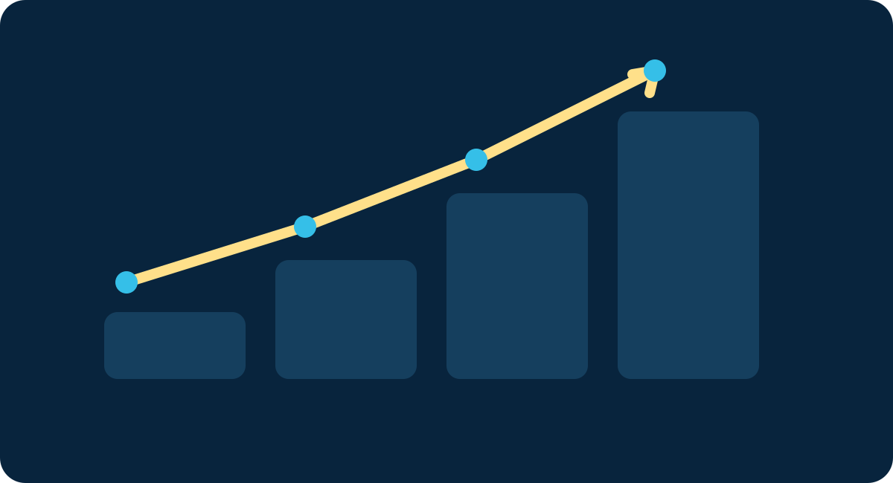

Why HR Problems Are Often Diagnosed Wrong — and How to Find the Root Cause Before You Waste Time and Budget
A practical framework for turning an HR complaint into a testable hypothesis, a root-cause diagnosis, and a measurable intervention.
Connecting practical HR methods with people analytics, responsible AI, career development and the future of work — with an emphasis on execution, problem solving and measurable outcomes.

The purpose of this platform is to connect HR knowledge with real workplace problems, useful frameworks, measurable indicators and responsible use of AI.
HR is not only policies and administration. It connects workforce strategy, talent, capability, performance, rewards, employee experience and business outcomes.
Develop skills, leadership, communication and career mobility.
Translate expectations and feedback into measurable performance.
Combine human judgment, analytics and AI to redesign work responsibly.
The major HR functions work as one system. Each function creates data, decisions and actions that influence the employee and business experience.
Translate business direction into workforce priorities, capability and organization design.
Forecast roles, skills, capacity and critical workforce risks.
Build sourcing, selection, assessment and candidate experience systems.
Strengthen communication, policy application, conflict resolution and trust.
Design fair, competitive and performance-supporting reward structures.
Connect learning to skills, capability gaps and business priorities.
Clarify goals, evidence, feedback, coaching and development.
Create practical governance aligned with organizational requirements and applicable law.
Connect systems, workflows, data and automation while protecting people and information.
AI is most valuable when it becomes an intelligence layer inside HR workflows, data and decisions — not just a chatbot.
Analyze workforce data, future skills and scenarios to identify capacity and capability gaps.
Support labor-market research, job content, candidate targeting and communication.
Support CV parsing, skill matching, sourcing and scheduling while keeping human review in the decision loop.
Provide policy knowledge, workflow guidance and personalized onboarding support.
Identify skill gaps and recommend learning, projects and development pathways.
Support goal writing, evidence synthesis, feedback preparation and coaching — without replacing manager judgment.
Identify patterns in turnover, engagement and mobility data to support early intervention.
Match employee skills with target roles and show the development steps required for mobility.
Move from data to patterns, insights, decisions, interventions and measurable outcomes.
Career growth now connects target roles, transferable skills, AI literacy, evidence, learning and professional positioning.
Clarify strengths, interests, target roles and the gap between today and the desired career.
Map transferable experience to HR competencies and build evidence for the transition.
Show outcomes, capabilities and AI-enabled work without keyword stuffing.
Strengthen communication, influence, conflict resolution, leadership and problem solving.
Use skills and evidence to identify realistic next roles and development priorities.
Track skills gained, evidence created, visibility, opportunities and outcomes.
These lightweight tools are built into the site to help visitors diagnose problems, score use cases and convert gaps into practical next steps.
Separate goal, capability, motivation, process and management causes before selecting an intervention.
Compare current and target capability to create a focused development plan.
Evaluate value and feasibility before introducing an AI workflow.
Review the funnel from sourcing to offer and locate likely leakage.
Source → Screen → Interview → Offer → HireTest whether the problem is expectation, capability, behavior, motivation or management.
Expectation → Capability → Behavior → ResultReview purpose, data, privacy, bias, human oversight, documentation and escalation.
Purpose → Data → Risk → Oversight → AuditA useful people metric is not the end of the process. It is the beginning of diagnosis and action.
Turnover, time-to-hire, absence, engagement, performance and skills data.
Look for patterns, segments, bottlenecks and relationships that explain the result.
Choose an intervention, assign ownership and define the expected outcome.
Compare results with the baseline and determine whether the intervention worked.
Use analytics to improve decisions rather than simply produce dashboards.
Use only appropriate data, control access and explain how people data informs decisions.
The strategic question is not only which AI tool to buy. It is which tasks should be automated, augmented or kept human-led — and what skills, controls and operating model are required.
Routine, repeatable, rules-based work with measurable value and manageable risk.
Use AI to improve analysis, speed, creativity and decision support.
Keep accountability, empathy, ethics and high-impact people decisions human-led.
Move beyond job titles toward skills, capabilities and internal mobility.
Use workflow agents with clear permissions, auditability and human escalation.
Lead adoption through governance, communication, reskilling and measurable outcomes.
Six long-form articles with frameworks, implementation steps, examples, measurement ideas and practical HR applications.
 01
01A practical framework for turning an HR complaint into a testable hypothesis, a root-cause diagnosis, and a measurable intervention.
 02
02From job analysis to structured interviews, work samples, fair scoring and quality-of-hire measurement.

03A diagnostic framework to distinguish skill, motivation, expectations, system, workload and management causes.
A practical roadmap for translating previous experience into credible HR capability and evidence.
 05
05A practical map for AI in workforce planning, attraction, hiring, onboarding, learning, performance and retention—with governance.
 06
06How to move from static job descriptions to a dynamic system of skills, learning, internal mobility and workforce planning.
Follow the work, explore the articles and connect through the professional channels below.